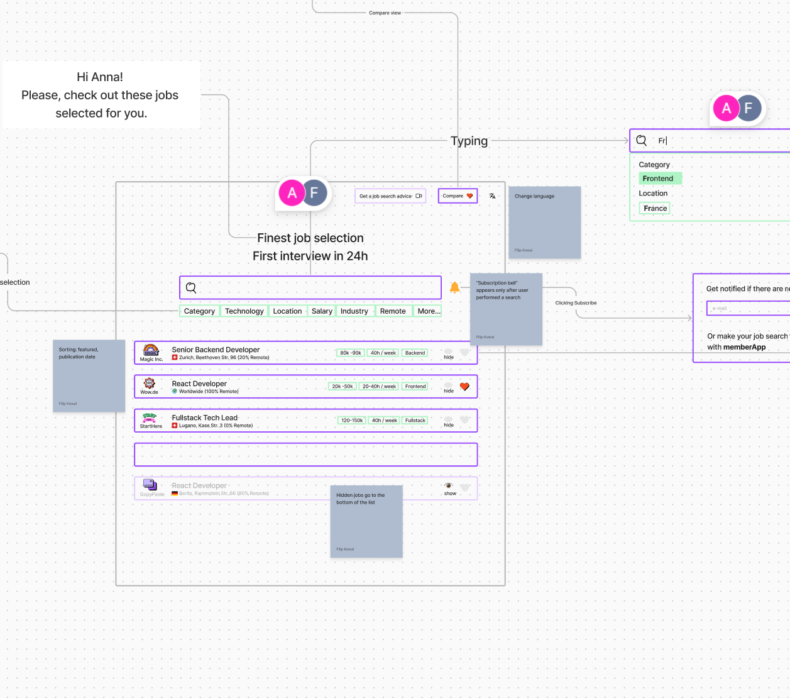
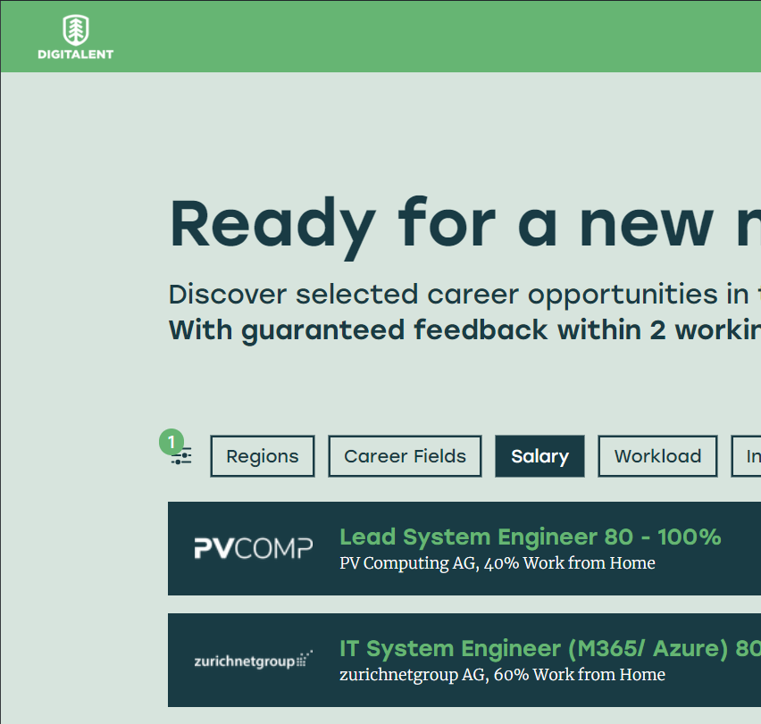

UX
I have helped the client clarify the business needs and create a
common, early vision of the product. The design process involved
creating user personas, defining the needed features, and mapping
out data flow.

I prepared a lo-fi mockup and collected stakeholders' feedback to further shape the interface. 
Afterwards, a hi-fi mockup adhering to the client's brand identity was created. 